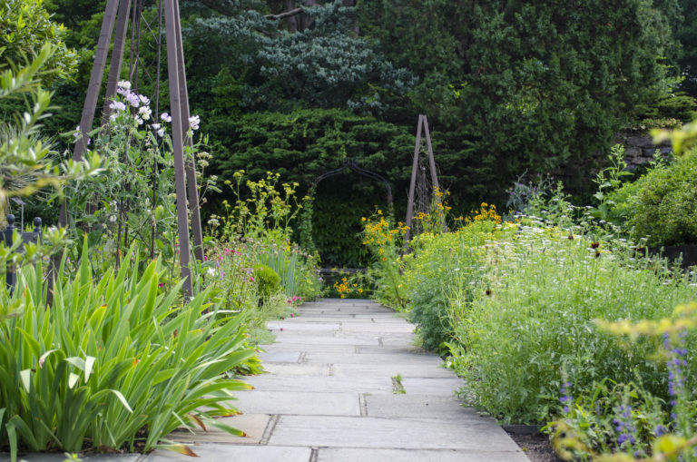

Fedezze fel gyönyörű kertünket!
Gyógynövénykertünk egy igazi zöld oázis, ahol több mint 100-féle gyógy- és fűszernövény található meg. Célunk, hogy bemutassuk a természet csodálatos erejét és közelebb hozzuk látogatóinkhoz a hagyományos növényhasználat kultúráját. A kertet úgy alakítottuk ki, hogy minden évszakban különleges élményt nyújtson: tavasszal a friss hajtások, nyáron az illatozó virágok, ősszel pedig a betakarított termések varázsolják el vendégeinket.

Sétányaink mentén információs táblák segítik a tájékozódást, és kertészeink szívesen válaszolnak minden kérdésre. Nálunk megismerheted többek között a levendula, kamilla, citromfű, rozmaring és zsálya titkait, miközben feltöltődsz a természet közelségében. Rendszeresen tartunk vezetett túrákat és tematikus foglalkozásokat, hogy mindenki megtalálja a számára érdekes tudnivalókat és élményeket. Gyógynövénykertünk nemcsak egy hely, hanem egy élmény, ahol a természet szeretete és a tudás találkozik.